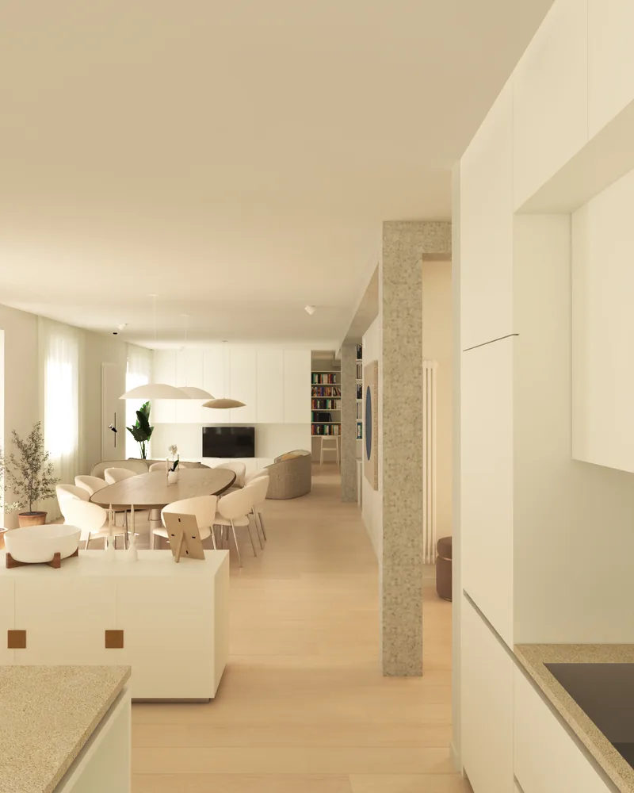

Interni e arredi su misura
Il progetto d'interni arriva fino alla scala del dettaglio: un bancone, una cucina, una libreria, una maniglia. Lo studio disegna interni e arredi su misura per case e locali, pensati per lo spazio in cui vanno, e ne segue la realizzazione.
Cosa comprende
- Progetto d'interni: distribuzione, luce, materiali e colori.
- Disegno di arredi su misura: cucine, bagni, librerie, armadi, banconi.
- Scelta di finiture, rivestimenti e illuminazione.
- Render e realtà virtuale per vedere gli ambienti prima di realizzarli.
- Direzione lavori e controllo delle realizzazioni.
Tra i progetti recenti, gli interni degli appartamenti di Le Pietre, a Castelfranco Emilia, e gli arredi su misura dei due appartamenti di via Carteria, a Modena. La stessa ricerca su materiali, colori e luce guida gli studi sperimentali sulla forma delle serie di gioielli Alberi e Cielo.
Progetti

Interni residenziali

Due appartamenti

Appartamento

Appartamento
Parliamo del tuo progetto
Scrivi a info@samuelesilvestriarchitetto.com o chiama il +39 366 493 8286. Lo studio è a Modena, in via Asiago 58, e segue progetti in tutta Italia.